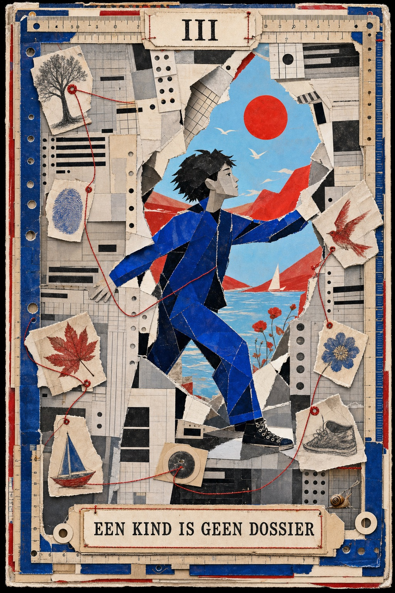
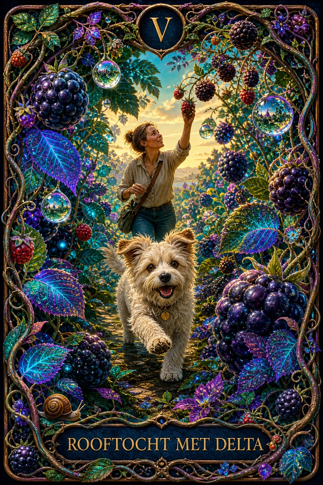
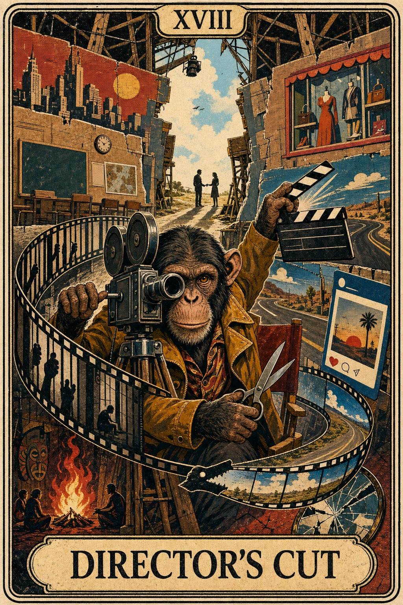

Bronnen, grenzen en nuances blijven zichtbaar.
Soms weet je wat goed voor je is. En doe je toch iets anders.
Waarom doe je soms precies wat je niet wilt doen?
Je bent geen raadsel dat opgelost moet worden. Wel een mens die iets kan ontdekken over patronen, relaties, verlangen, angst en verandering.
Geen snelle mensformules. Wel onderzoek, herkenning en onverwachte zijpaden.
Waar blijf jij op hangen?
Kies niet wat verstandig klinkt. Kies wat iets in je raakt.
Elke ingang brengt je bij onderzoek, menselijke ervaring en een volgende vraag.
Patronen
Waarom val ik terug in iets waarvan ik dacht dat ik het voorbij was?
Over gewoontes, automatische routes en waarom weten nog geen veranderen is.
Dit raakt mij → RelatiesWaarom voelt de ene mens als thuiskomen — en de andere als gevaar?
Over hechting, verwachtingen en wat er tussen twee mensen ontstaat.
Volg dit spoor → VeranderenKan ik echt veranderen, of word ik alleen beter in mezelf verklaren?
Over neuroplasticiteit, oefening, grenzen en wat verandering werkelijk vraagt.
Onderzoek de vraag → VerwonderingWaarom zie ik soms pas wat er al die tijd voor mijn voeten lag?
Over aandacht, natuur, overvloed en de kansen die zichtbaar worden wanneer je vertraagt.
Ga mee op rooftocht →Zelf een vraag in je hoofd?Zoek zoals je denkt. Een gewoon woord is genoeg.
Uitgelicht
Onderzoek, ervaring en verandering.

Maatschappijkritiek · Denkstuk
Een kind is geen dossier
Over trauma, opvoeding en wat er gebeurt wanneer een systeem het papier beter ziet dan het kind.

Persoonlijke ervaring · Natuur
Rooftocht met Delta
Over bramen, overvloed, aandacht en alles wat je pas ziet wanneer je even van het pad raakt.

☾ Nieuw in de Atlas · 18 juli 2026
Ervaring
Hoe wereld, lichaam, verwachting, aandacht, geheugen en cultuur samen een beleefd moment vormen — zonder werkelijkheid tot illusie te reduceren.
Vier werelden
Begrijp. Probeer. Verwoord. Vind verder.
 01 · Begrijpen
01 · BegrijpenDe Menselijke Atlas
Verken de gebieden die samen een mens vormen: brein, emoties, relaties, identiteit, verandering en bewustzijn.
Open de atlas → 02 · Proberen
02 · ProberenMenslab
Quizzen, reflectievragen en kleine experimenten waarmee kennis een ervaring kan worden.
Probeer iets uit →
03 · VerwoordenDenkstukken
Persoonlijke ervaringen, opinies, filosofische verkenningen en vragen die nog niet af zijn.
Lees wat mensen beweegt → 04 · Verder zoeken
04 · Verder zoekenDe Wegwijzer
Door ons gevonden boeken, makers, plekken en hulpmiddelen voor wie een onderwerp verder wil verkennen.
Vind een volgende stap →Geen eindpunt voor de waarheid. Wel een uitnodiging om scherper, zachter en nieuwsgieriger te kijken.
Welkom bij De Onwijze Wijsheden
Een plek voor wat een mens weet, voelt én nog niet begrijpt.
De Onwijze Wijsheden brengt wetenschap, menselijke ervaring, filosofie en speels zelfonderzoek bij elkaar. We maken steeds zichtbaar wat stevig onderzocht is, wat iemand persoonlijk ervaart en wat voorlopig nog een open gedachte blijft.
Een verhaal is geen bewijs, maar kan wel iets herkenbaar maken.
Een hypothese mag bestaan zolang ze geen feit speelt.


Community in opbouw · Voor nieuwsgierige mensen en vreemde vogels
Welke vraag durf jij bijna nergens te stellen?
We bouwen aan een plek waar losse gedachten later iemand anders kunnen ontmoeten. Je kunt de opzet nu al verkennen en veilig een lokaal concept maken.
Echte profielen en openbare reacties volgen later. Wat je nu schrijft, wordt nog niet automatisch verzonden. VoorbeeldvraagOver jezelf
VoorbeeldvraagOver jezelf“Ben ik introvert, of gewoon vaak overprikkeld?”
 VoorbeeldvraagOver relaties
VoorbeeldvraagOver relaties“Waarom mis ik iemand bij wie ik mezelf verloor?”
 VoorbeeldvraagOver betekenis
VoorbeeldvraagOver betekenis“Wie ben ik als niemand iets van mij nodig heeft?”